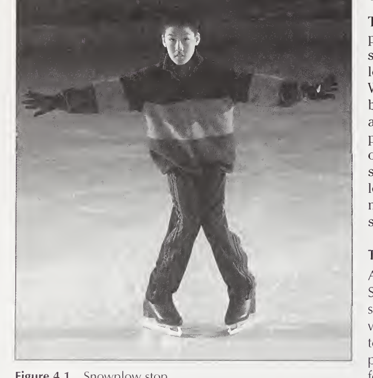
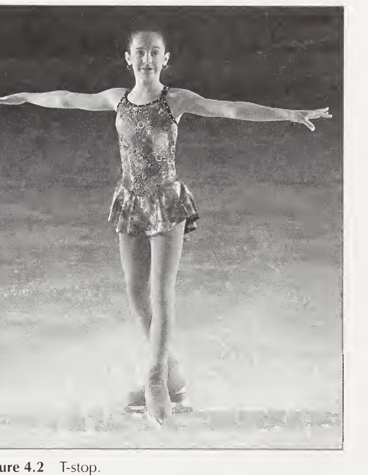
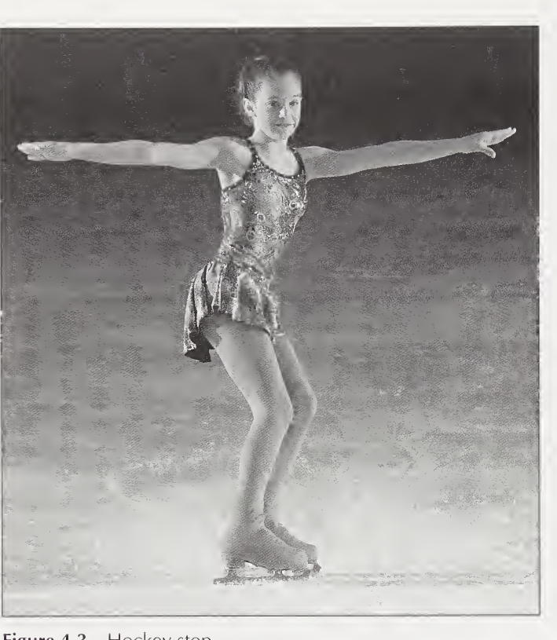
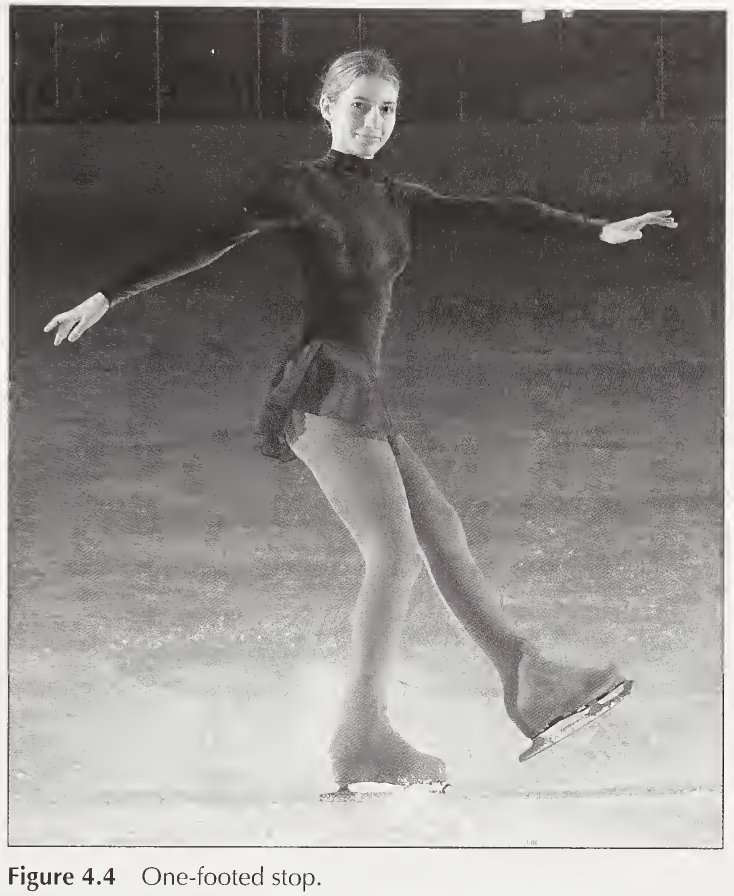

Snowplow Stop
Beginner
Upright torso, arms extended straight out to the sides for balance.
Start with feet parallel, about shoulder-width apart. Press both feet into the ice and push/slide them out to the sides, finishing in a wedge like the point of a snowplow blade: toes turned in toward each other, heels pushed out — an upside-down V seen from above.
Both blades. Braking comes from pressing down so the blades skid and shave the ice.
Tips
- The most basic stop — and the bridge to learning all the others. Advanced skaters rarely use it once harder stops are mastered.
- Pressure check: done right, you'll shave a little snow off the ice and leave a visible skid mark.
- Drill ("Yikes! Stripes!"): practice on a painted hockey line so the skid prints show clearly; or hold your balance over one foot while the other pushes out, one foot at a time.
One-Foot Snowplow Stop
Bonus · BeginnerNot in the book — a standard beginner progression, added from coaching sources on the web.
Same snowplow posture — upright torso, arms out to the sides, knees bent. Most of your weight sits over the straight gliding foot; the braking foot starts light.
Glide forward on one foot, pointing straight ahead. Set the other foot down slightly ahead, turned in about 45° — toe in, heel pushed out, like one half of the snowplow wedge — and ease it into a scrape.
The braking foot skids on the inside part of its inside edge, shaving snow; keep the blade flatter so it scrapes instead of catching. The gliding blade stays flat and straight.
Tips
- The classic bridge from the two-foot snowplow to the T-stop and the hockey stop.
- Start at the boards: holding on, push one foot out at a time to feel the scrape and build a little snow pile.
- Add pressure gradually — digging in hard too fast makes the edge catch.
- Practice braking with each foot; most beginners favor one side.
T-Stop
Beginner–Intermediate
Both arms stretched out to the sides, palms facing the ice and pressing down slightly. Ribcage lifted slightly so the back stays straight — this gives posture, balance, and stability.
Glide forward on one foot. Lift the other foot and set it down 12–18 inches behind the gliding foot, turned perpendicular. The back foot then drags/pulls lightly toward the front foot. You finish in an upside-down T: front foot pointing forward, back foot sideways behind it, heel of the front foot at the instep of the back foot. During the drag: front knee slightly bent, back knee straight; at the very end, both knees straighten.
The back foot does the braking (its blade skids with snowplow-like pressure). Progression: place the back foot on its outside edge, close behind the front foot — this builds the outside-edge control you'll need for the one-foot stop.
Tips
- NOT a quick stop — it's a prepared stop: controlled and aesthetically pleasing.
- Practice with each foot in front (right-front and left-front).
- Barrier drill: face the boards, hold on with both hands, front toe perpendicular to the boards, and repeatedly draw the back foot up to the front to make "snow piles." This teaches exactly how much pressure stops you; as you improve, apply more pressure in less time.
Hockey Stop
Advanced Emergency brake
Hips and shoulders stay square to your line of travel, shoulders held in a checked (counter-held) position. Arms remain straight out to the sides for the entire stop. Weight balanced slightly in front of the center of the blade, so the blades can swing sideways.
Glide forward on two feet with knees bent. Rise up slightly (knees un-bend), then turn both feet together to the side — at a full stop the feet sit at a 90° angle to the body. As the feet turn, bend the knees again rapidly to drive force into the ice.
Both blades, turned sideways so the edges bite and spray snow — this is what stops you fast.
Tips
- The most advanced stop and the one used most by both hockey and figure skaters. This is your emergency brake — use it to avoid a person or object when there's no time for anything else.
- Practice turning to both the right and the left.
- Feel drill: twist in place from right to left, feet always moving together, finishing with feet pointing opposite to your shoulders and hips.
One-Footed Stop
Advanced
Identical to the hockey stop — same shoulder position (square, checked) and same arms straight out to the sides.
A hockey stop on one foot only, turning to the right or the left. Lift either the front or the back foot; the foot that stays down turns sideways exactly as in a hockey stop. The free leg extends behind you.
One blade only — the supporting foot, using the same edge action as the hockey stop. Requires solid control of both outside and inside edges first.
Tips
- Purely for show — never use it when the stop is urgent.
- Learn the two-footed hockey stop first; the one-foot version is the same technique with a harder balance shift (the same shift as going from a two-foot glide to a one-foot glide).
- Attempt it only after mastering outside and inside edges.
All four stops at a glance
| Stop | Feet | Braking blade(s) | Body key cue | Speed of stop | Level |
|---|---|---|---|---|---|
| Snowplow | Parallel → wedge (toes in, heels out) | Both, pressing/skidding out | Arms out, upright | Slow–medium | Beginner |
| T-Stop | Upside-down T | Back foot drag (later: outside edge) | Arms out, palms down, ribcage lifted | Slow, graceful | Beginner–intermediate |
| Hockey stop | Both turn 90° sideways | Both edges bite together | Shoulders square & checked, fast knee bend | Fastest — emergency | Advanced |
| One-footed | One foot sideways, other lifted | Single supporting blade | Same as hockey stop | Slow — for show | Advanced |
| One-foot snowplow (bonus) | One straight, one turned in ~45° | Inside edge of the braking foot | Weight on gliding foot, knees bent | Slow–medium | Beginner |